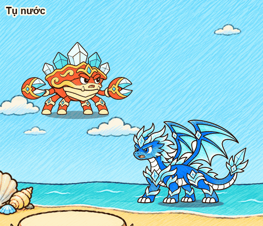
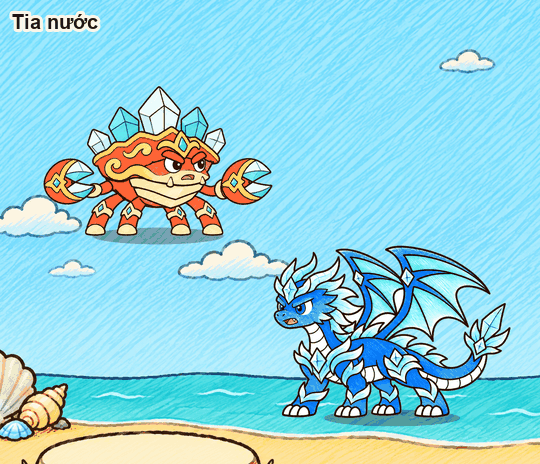
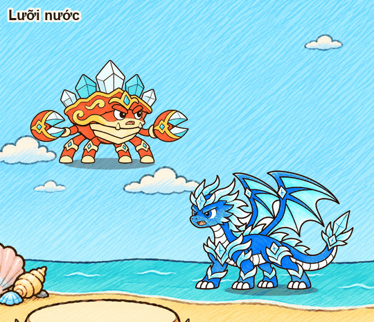
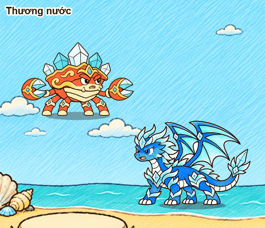
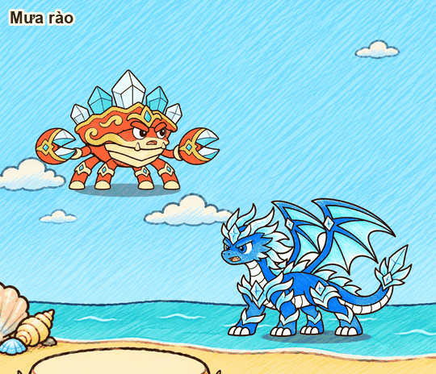
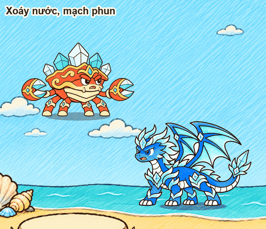
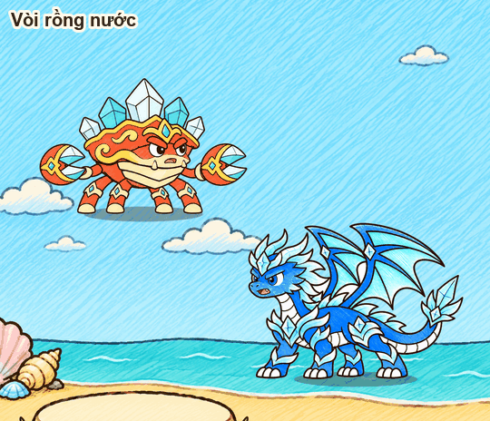

12 hiệu ứng. Hạt chồng lớp phẳng (hình hạt do GPT vẽ) cộng mảng nước liền tô phẳng cho thân vòi rồng, sóng thần, lưỡi chém. Sinh bằng ArtGen/Spine/bo_thuy.py.

Tụ nước giọt và sóng xoáy vào, cầu nước lớn dần rồi thấm vào tướng

Tia nước tụ ở miệng, bắn dòng nước liền có sóng cuộn; chỗ trúng toé vương miện nướcCầu nước tụ cầu lớn, ném vòng cung, vỡ thành cột nước và mưa giọt

Lưỡi nước hai lưỡi trăng khuyết chém liên tiếp

Thương nước sáu mũi tụ vòng cung trên đầu rồi phóng lần lượtBong bóng chùm bong bóng trôi lượn, vỡ lần lượtSóng thần con sóng mào cuộn lăn tới, đổ ập lên đối thủ

Mưa rào mây tụ trên đầu đối thủ rồi trút mưa

Xoáy nước, mạch phun xoáy sát đất siết vào tâm rồi cột nước vọt lên

Vòi rồng nước làm lại: các vòng nước xếp chồng lắc lư, trong mờ